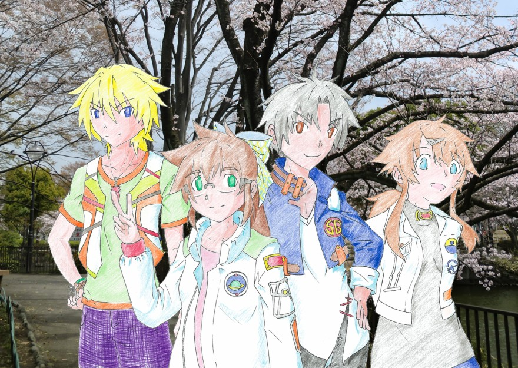

シ ャ ウ ト ！
- S t a r g a z e r s D i s c 2 -
作：石積ナラ
////////////Ｔｒａｃｋ４ Ｓｔａｎｄｂｙ Ｒｅａｄｙ． ……ＧＯ！////////////
夏は終わりを迎え、黄昏時も早くなる。
９月を過ぎ、１０月中旬。２学期の中間テストを何とかクリアし（翼だけは何教科か赤点だった。僕らが追試向けの教科特訓のおかげで、追試はギリギリ赤点回避といった具合）、文化祭の最後の準備を済ませ、物販物もそろえた。
僕が先月発表した新曲も、『エターナルレイン』というタイトルで決定し、僕らスターゲイザーも、バンドとしてだけではなく、いさなのサポートメンバーとして、ソティラスが流すＭＩＤＩ音源との同調も進めてゆく。
何とか全てが形になったのは、文化祭１０日前だった。そして、形になったそれを更に昇華させるため、リハーサル形式で、それを何度も、何度も、繰り返してゆく。
それからは、僕はメガネの謎を解くことを中断した。今はそれよりも、文化祭１日目のステージプログラムを、何としてでも成功させるべく、有意義に時間を使ったほうがいい、と考えたからだ。もちろん、文化祭が終わったら何が何でも悠介に戻るつもりだ。
……だが、そう決めた今でも、戸惑いは続く。当たり前だ。女の子として暮らすうちに、以前なら考えられないくらい、食べ物や味の好み、味覚の変化、物事の感じ方、異性や同性の見方などが、変わってきている。そのたびに、「わたしは男の子だ！」と心の中で叫び、頭を抱えていた。
そして、いよいよ文化祭がやってきた。
これまで培った実力を、発揮するときがやってきたのだ。
「うっし、お前ら！」
軽音楽部部室、視聴覚室。長野先輩が音頭を取り、僕たちは円陣を組み、右手の拳をぶつけ合っていた。
「今日がお前らの実力を発揮する時だ。文化祭１日目のラストを飾るにふさわしい、学校中の全員を熱狂させるような演奏を、ぶちかましてやれ！」
そんな部長の発破に、僕たちは「はい！」と元気よく、返事をした。
学校中では、たくさんの模擬店やアトラクションが、客を呼び込もうと大声を上げていた。掲示板ではないところにも、たくさんの手作りポスターが張り出されている。どれもこれも弩派手で、あるいはインパクトがあり、客寄せ効果抜群のものばかりだった。目移りしてしまい、どこから回ろうかと悩んでしまう。
今回、僕らスターゲイザーのメンバーは、まずは全員でアトラクションを回った。いさなとソティラスは、相変わらず一緒だ。
「ねぇ、みんな。もんじゃ焼き屋に寄っていかない？」
調理実習室に差し掛かったとき、僕は提案した。翼と瑠美奈はかなり乗り気。航太も、あごに手を添えて唸る。
「もんじゃ焼きか…… 食べたことは１度もないし、興味はあったところだ。よし、行ってみよう」
３年Ｃ組、アトラクション名『模擬店ホカホカおこのみ／じゅ〜じゅ〜もんじゃ！』。インパクトのあるレタリング文字に、手書きの萌え系女の子キャラクター。きっとこのイラストレーターは、アマチュアの絵師か何かだろう。日本中の漫画家や小説家、その他様々なクリエーターたちが集まるというイベントで、本を売っているに違いない。
座席は、各調理台に２枚ずつのホットプレートがあり、自分で焼くというスタイル。先生が使うための調理台には、このアトラクションを出している３年生の先輩たちが、キャベツをハンドルつきの機械でみじん切りにし、ボウルに具材を取り分けている。ホットプレートのそばには、ラミネートされた、お好み焼き、もんじゃ焼きの作り方が書かれた紙が貼り付けられていた。
この文化祭で通用する通貨は、全国に出回っている法定通貨（いわゆるお金）ではなく、現金で購入した数字が書かれたチケットを使うことになる。これは、地域通貨（一定の範囲、すなわち地区や地域、コミュニティの中で通用する）に近いものだと思えばいいかもしれない。外来者は学校を出る際、生徒の場合は後日、現金への還元が可能だ。
受付と注文は僕が取る。
「もんじゃスタンダードセットを、５人前でお願いします。トッピングは、これとこれと、これ！」
チケットを支払い、僕たちは案内された席に座る。程なくしてもんじゃ焼きのメインとなる材料が運ばれてきた。何をトッピングするかは、参加者の自由のようだ。
「それじゃあ、いっくよぉー！」
「おぅ、やってくれ、鉄板番長！」「楽しみにしてるよ、はるちー！」「……お前ら少し落ち着け」
僕は説明書どおりにキャベツを炒め、輪にしたダムの中央にトロトロの液体を注ぎ込む。一気に流すとダムが決壊し、外側にあふれることがあるので、数回に分けて流すのがコツらしい。他にも具を足してゆき、とどめにチーズを上からまぶし、チーズが溶けてきたら完成だ。
食べるときには、焼きそばを炒める時に使う金属製のへらを小さくしたもの（これを「かえし」という）を使い、もんじゃ焼きを引っ張りながら小分けにし、すくいあげて食べるらしい。
「……うん。なかなかのものだな、はるか」
「ありがと、航太。ひとり暮らししてるからねー。小さい頃から包丁やフライパンとかの調理器具の使い方は、ひととおりお母さんに習ったから、あとは料理ブックを買ってきて実践するだけ」
「それはすごい。俺なんか、家事なんてまともにやらなかったから、バイト先の喫茶店で、皿を割ったり、洗い残しをしたりしてばかりだった」
「そっかぁ。今のご時勢、男の子は家事くらいできないと、女の子にモテないぞ？」
「分かった、今後は努力しよう」
すると、そこに瑠美奈が翼にちょっかいを入れる。
「そんじゃ、ドードー（翼のあだ名）は一生、女の子にモテそうもないか。てか、あんたの場合彼女ができたらそれだけでも瓦版だよね？」
「んだと、瑠美奈。ケンカ売ってんのか？」
「実技はパーフェクトでも、ミシンも調理実習も『性に合わない』とか言ってサボりまくって、成績ボロボロじゃない。主要５教科がとっくに末期なんだから、ここで自分の評価を守っておきなさい」
「うっせぇ、お前はオレの母親か？」
そんな風ににぎわう中、僕たちはもんじゃ焼きを全てご馳走になり、次のアトラクションへ。僕たちがこうして遊んでいる中、いさなが部室でカウンターの当番をしてくれている。そしてそのカウンター当番は、長野部長を外した６人で、ローテーションで回すことになっている。長野先輩は、僕たちがステージに出演している間のカウンターの当番を引き受けてくれた。
文化祭は、つつがなく進む。
アトラクションも模擬店も、まだまだたくさんある。僕たちはそれぞれに、たまに軽音楽部のアトラクションのカウンター当番をしながら、文化祭を楽しむ。いさなとソティラスはいつものように、カウンター当番がないときは行動をともにしている。
航太、瑠美奈の順番を経て、僕はカウンターにて、当番をしていた。ただ、このアトラクションに訪れた人数をカウントするだけの、とても簡単な仕事。車の交通量を調べるアルバイトをしていた人曰く、「単調だから眠くなりがちだけど、注意を怠るとボタンを押す数を間違えるから、忍耐力が必要な地獄みたいな仕事だよ」だそうな。……分かる。
僕ら軽音楽部のアトラクションは、ハンバーガーショップでも発表したとおり、蓄音機などの手作り音響機器の展示。
一番見てほしい展示品は、プラスチック製の使い捨てカップの側面に音を録音し、またそれを再生することができる、エジソン式蓄音機だ。みんなに好きに録音を楽しんでもらえるようにカップはたくさん用意しているし、僕たちの楽曲を録音したカップも、用意してある。これを視聴して、ＣＤを買ってもらえたらとてもうれしい。
カウンターでは、オリジナルグラス、ピック型ストラップ、そして僕たちが何より販売したい楽曲を録音したＣＤを売り込む。他にも、真空管ラジオやトランジスタラジオ、曲はメジャーなのに名前は意外と誰も知らない国内外のロックバンド名鑑、ライブハウス、ストリートを中心とした、スターゲイザーといさなのライブシーンを収めた写真集なども展示していた。触って遊べる音響機器は、老若男女問わず好評だった。
そして僕の当番の時間が終わる頃に、翼が交代としてやってくる。
「お疲れ、はるか！」
「うん。翼も、ありがとね」
バトンタッチし、翼が、僕が先程まで座っていた椅子に座り、入れ替わりにアトラクションに訪れた人を、カウントしてゆく。入れ替わりに僕は別のアトラクションに行こうとしたけれど、他校の高校生にエジソン式蓄音機の扱い方を尋ねられ、それを教えてから行くことに。
「じゃあね、翼。またあとで！」
「ああ。……あ、いや、ちょっと待て、はるか」
僕は視聴覚室のドアを開けようとしたが、翼の呼び止めに、カウンターに戻る。
「ステージ前、開いてるだろ？ 腹が膨れない程度に、一緒に飯でも食いに行こうぜ。ちょっとそこで、お前に相談があるんだ」
「相談？ ……うん、いいけど」
「んじゃあ、３時ジャスト、吹奏楽部がやっているアトラクション、音楽室のメイド喫茶、集合な？」
「うわぁ。あんた、そう言う趣味の持ち主だったん」
「違うよ！？ 普通にゆったりとした音楽つきの喫茶店とかどうかって思っただけだからな！？」
必死に繕っている翼。こいつ、出会った頃からいいわけや弁解が苦手だった。もちろんその中には照れ隠しやツンデレ（男のツンデレも、悪くないキャラもいる。某犬耳妖怪とかね）もあっただろう。あと、変な誤解を生みそうになった場合、よくうろたえる。翼は、アドリブが苦手なのだ。
まぁ、翼がそう言うのなら、それではそう言うことにしておこう。メイドさんを見て鼻の下延ばしたって、僕は何も…… 言わずに済むだろうか。
音楽室。
吹奏楽部のアトラクション、メイド喫茶。
……ならぬ、
「ここ、戦場じゃない…… いや、父さんは『仕事場は
『アームド喫茶』。
軽音楽部は大抵、女子が多い。もちろん男子もいるが、双方の人数の割合としては圧倒的に女子が９割以上を占めている。それで、そのかわいい子ぞろいの我が詩ノ月高校吹奏楽部の女子生徒が身に纏っているのは、メイド服ではなく、迷彩服。
腰には銃、額にはシールド（サバイバルゲームなどに使う目を保護するための防具）。挨拶は『お疲れ様です、○○○！／任務がありましたらお申し付けください！／またのご命令をお待ちしております！』……と、どこかの軍隊ないし自衛隊の隊員のような言い回し。
……正直、困る。いろいろと。
「ねぇ、翼」
「ん？」
「メイド喫茶のほうがマシに思えてきた」
「そうか？ オレは『お疲れ様です、二尉！』って言ってもらえてすごくうれしい」
「あっそ。……ヘンタイ」
階級の部分は、先生であれば准将（将官）、３年生なら一佐（佐官）、２位年生なら二尉（尉官）、１年生なら三曹（曹）、外からのゲストであればお客人と、呼び方を使い分けしているらしい。僕たちのあとに校長先生が来て、司令長官（所属であって階級にあらず。だが階級にすると、将に当たるだろう。）と呼んでいた。
ちなみに、こんなことがあった。校長先生が「ならば教頭先生はどの位置づけかね？」と問うと、「はっ、将補（将官、将のひとつ下）であります！」と。……ソティラス並みの厨弐病患者だろう、このアトラクションの発案者は。
「翼は何頼む？」
「お前と同じでいい。オレも甘いもの好きだから」
「じゃあ、わたしはいちごのショートケーキとミルクティー。飲み物くらいは自分で選んでよね？」
「んじゃ、無難にコーヒーで」
「あっ…… わたしもそれにすればよかったかな。まぁいいや。すみませーん！」
僕の呼びかけに、近くにいた１年生と思われる吹奏楽部の女の子が駆け寄ってきた。そして僕の前に立つと、「
「んじゃあ、いちごのショートケーキをふたつと、ミルクティー、コーヒーをぞれぞれひとつずつで。翼って、ブラックだったよね？ 添え物もスプーンもなしで、お願いね」
「イエスマム！ 指令を復唱いたします！ いちごのショートケーキを……」
ちなみに、上官に対する呼び方は、男性であれば「Ｓｉｒ」、女性であれば「Ｍａ’ａｍ」となる。
注文、もとい指令を確認…… 復唱すると、朝倉二士は敬礼をし、カウンターに戻り、ケーキと飲み物の準備に取り掛かる。その間、僕は翼の話を聞くことにする。そもそも、こいつの話を聞くために、こんな妙ちくりんなお店に出向いたのだ。
「それで、翼？ ステージを前にしてまでしたい相談って、何なの？」
「あぁ、あれな。別に、ステージは関係ねぇよ。プログラムに支障をきたすようなことは、何もねぇ。お前とこうして、話がしたかったから、かな？」
「どゆこと？」
「まぁ、オレだって人並みに緊張するわけだし？ まさか軽音楽部が１日目の
「何だ、そゆこと。だったら、いいよ。時間もまだあるし、気の済むまでお話しよっか！」
……そして、何だかんだ言いながら。
炭酸と、糖分が濃いもの以外で、いろんな飲み物と軽めの食事を注文しながら、ステージの準備が必要な時間まで、僕たちはメイド…… もといアームド喫茶で、お祭りとも軽音楽部ともあまり関係のない、他愛のない会話を、楽しんでいた。
うん、こういうのも、悪くないかもしれない。バンドメンバーと、これほどバンドとは無関係なことでお話をしたのは、ずいぶん久しぶりかもしれない。
そして。
とうとう、僕たちのステージプログラムが始まろうとしている。
あれから、ステージ午後の部が始まる少し前に、楽器やその他音響機器の微調整、リハーサルを行い、他にステージプログラムを担当するチームと合同で細かい作業をした。
一度締め切られた体育館のドアが開かれ、学校に訪れた人々が押し寄せてくる。ステージ側から、１年生、２年生、３年生、一般客の順に座席があり、午後のステージプログラムだけは、３年生の席が一般に開放されている。ここの生徒は、３年生であろうと適当に１年生から２年生の座席に座る。来賓席には、あまり人が集まらない。
……さて。
そんな中、僕たち軽音楽部を含め、ステージ担当のグループは４組。
１組目：吹奏楽部から６人編成で組織されたブラスバンドチーム。
主にアニメソングを吹奏楽にアレンジしたものを演奏した。プログラムは、アニメ版バーチャファイターの『愛がたりないぜ』、地球防衛企業ダイ・ガードの『路地裏の宇宙少年』、ゾイドの『Ｗｉｌｄ Ｆｌｏｗｅｒｓ』、鋼の錬金術師の『ＵＮＤＯ』、計４曲。
前半２つは、聞いていてとても熱くなるメロディーで、その曲を知っている人も知らない人も、大いに盛り上がった。そして３曲目は、七色の架け橋が輝く雨上がりの青空のような、とてもすがすがしいメロディー。ＲＡＭＡＲ＆ゾイドファンにはたまらない青春の曲だ。そして最後の曲は、たぶん多くの人が知っているかもしれない。学生や若い人の中には、歌詞を口ずさむ人もいた。
２組目：演劇部。演目は『西遊記』。
ここで演劇の十八番であるロミオとジュリエットを出さないあたりにこだわりを感じる。たった２０分という短い時間の中で西遊記の舞台を作るために、シナリオは終盤をベースに、大きくアレンジされていた。
驚くべきことは、孫悟空を演じた人が、サルの動作を参考にして開発されたといわれている拳法『
３組目：服飾部主催ミス＆ミスター異性装コンテスト。
要するに女装男子＆男装女子のコンテストである。その中には、僕たち『スターゲイザー』と『ＩＳＡＮＡ』の衣装もあり、もちろん採寸はモデルの人に合わせてある。そして、この後のステージで僕たちが出演することも宣伝してくれた。
人数は少ないため、登場してすぐに引っ込むというスタイルではなく、カメラでじっくりと写してそれをスクリーンに映し、服をデザインした人のコメントを聞き、デザイナーとモデルの紹介、感想を述べて次の人にステージを引き継ぐ、というスタイルになっている。
４組目：軽音楽部によるライブ。……僕たちだ。
コンテストの最中に音響機器と楽器を、文化祭実行委員の人にセッティングしてもらい、プログラム終了後は速やかに僕たちが演奏に入る準備をする。前に述べたとおり、軽音楽部でひとつの枠をもらっているため、そのプログラム内で、僕らスターゲイザーといさなが共同で歌うことになっている。
準備は万端。衣装に着替えた僕たちは、ステージ裏で円陣を組む。
僕たちのステージ衣装は、宇宙飛行士や宇宙開発者などが着る服装をイメージしたものだ。白ベースの布地にワッペンやボタンなどをあしらい、『何ちゃって宇宙服』風味に仕上げてもらったが、もちろん演奏に邪魔になるようなバックパックや手袋などは装備していない。ヘルメットの代わりに、僕以外はちょっと未来的なシールドをかけている。
いさなの衣装は、『ファンタジー世界の女冒険者』といったもの。革や麻布をふんだんに使った、ファンタジー映画から飛び出してきたようないでたちだ。ギターを演奏するのに邪魔なものは、腕につけていない。武器らしきものは纏っておらず、演奏にまったく関係のないギターケースを腰に提げていることから、ポジションとしては冒険者というより吟遊詩人なのだろう。ソティラスはいつもと変わらない（普段からコスプレしているから）。
「みんな！」
僕は、みんなの前に、手を差し出す。
「今日のために、わたしたちはがんばってきた。ステージ、絶対に成功させよう！」
その言葉に、みんながうなずいた。
そして、僕の手に、みんなが手を重ねた。
ギター担当、堂本翼。シンセサイザー担当、綾瀬瑠美奈。ドラム担当、榎園航太。ＩＳＡＮＡこと海棠いさな。いさなの音源担当、勇者ソティラス。……部長は、相変わらずアトラクションの受付担当だ。
円陣を組み、手を重ね、僕たちは心をひとつにまとめて、叫ぶ。
「スタンバイ・レディ！」
「ＧＯ！」
////////////Ｔｒａｃｋ５ 夢あふれるメロディーとともに////////////
チューニング、機材の接続、その他微調整がすでに行われた楽器を手に、僕は叫ぶ。
「ラストステージにお集まりの皆さん、お待たせしました！」
どっどどぉぉぉぉん…… ベースの一番低い音を最大ボリュームで奏で、空気を震撼させる。これには、多くの人がひるんだ。いいや、まだまだひるむのは、早すぎる！
「軽音楽部がお贈りします。わたしたちは、詩ノ月高校軽音楽部バンド、『スターゲイザー』。……そんじゃあ初っ端から、ブッ飛ばぁーすっ！」
そして、体育館、いや、学校の校舎すら倒壊させるほどの、大爆音が轟く。
１／２小節のドラムソロからはじまり、一気にすべての楽器によるメロディーが響き渡り、すべての空気を焦がしつくさんばかりの勢いで爆音が轟いてゆく。そのメロディーにたくさんの人が耳をふさぐが、これが爆撃でないことが分かると、少しずつ、耳から手を離してゆく。そんな前奏が終わって、メロディーが少し落ち着いた頃に、いよいよ僕の歌声が、ライブハウスと化した体育館を埋め尽くしてゆく。
まずは、僕たちの持ち歌にして代表曲『はじまりのステラ』。ちょっと抽象的な歌詞には、幼い頃に想い描いていた夢はやがて形を変え、今、確かにその夢をつかもうとしている、そんな夢見る人の姿勢を描いている。黄昏の空に輝く一番星を見上げ、僕たちは誓う。ただひとつの栄光をつかむと。そして訪れた夜空には、神話の世界が広がっている。
大音量の煌びやかなメロディーに乗せて、僕は夢を描いたメッセージを全力で歌い上げる。学校の生徒や若い人を中心に盛り上がってくれた半面、一部の大人や、学校の偉い人、来賓の人々は、序盤は受けなかったどころか煙たそうな顔をしていた。だが、はじまりのステラの後半になってくると、次第に僕のメッセージが通じたのか、楽しそうな表情をしていた。
「ＨＥＹ！」
コンクルージョン（アウトロダクション）の途中で、僕は叫ぶ。すると、大勢の人々が「うおおおおお！」と叫び、拍手を叩いたり、拳やサインを掲げたりしている。学校の偉い人たちも、小さいながら拍手を贈ってくれた。
「ありがとうございます！」
まだ、体育館に空気を焦がすほどのリバーブレーションが残り、それに頭でも殴られたかのようにふわふわしている人がいる中、僕はマイクを握る。
「皆さんこんにちは！ あるいは、はじめまして。詩ノ月高校軽音楽部、１日目のステージプログラムの最後を、担当させてもらいました。その役割に恥ずかしくないステージにしたいと思います。まずはわたしたち、スターゲイザーがお贈りします！」
ベース、ギター、シンセサイザー、ドラム、４つの楽器が、盛大にノイズを鳴らしまくる。そのノイズに、再び、観客たちが大いに沸き立つ。
すると、１年生の席の真ん中のあたりから、声が聞こえた。
「カッコいいぞ、はるちーっ！」
同じクラスの、
――うん、ありがと、さくら！
ステージの上から手を振る。桜は、軽音楽部の物販で買ったのだろう、マグカップを梱包した厚紙の箱を掲げている。
さて、気を取り直して演奏準備だ。いさなが控えているのだし、時間はムダにできない。
「それでは、まだまだ続きます！ 次なる曲は、エターナルレイン！ Ｌｅｔ'ｓ ｇｏ！」
はじまりは、ギターのノイズ。そこから、すべての楽器による大爆音が轟く。ドラムは大地を震わせ、ベースは空気を焦がし、ギターは雷鳴となる。唯一、シンセサイザーがこの荒々しいメロディーに彩りを添えてゆく。
やがてこの荒々しい、誰もが耳をふさぐだろう大音量のメロディーは、ひとつの景色を描き出す。それは、夜空。煌びやかな夜空。テンポはゆっくり目で、ギターもドラムもどたとだと弾きまくらない。そして色鮮やかなメロディーに載せて、僕は歌いだす。
エターナルレインは、学校の屋上で、流れ星が輝く夜空を見上げる、若きカップルのラブロマンス。屋上のカギを職員室に返さないまま居残り、ちょっと悪いことをしている背徳感と、好きな人と一緒にいるこの恋心、ふたつのドキドキする気持ちを歌った、そんな歌。
恋と夢とロマンにあふれた、僕たちの２曲があっという間に終わる。少しでも、僕の歌を聞いて、夢やロマンに心躍らせてくれる人がいてくれたら、とてもうれしく思う。
そして主役は、いさなに移行する。アーティストＩＳＡＮＡとして歌う彼女の音楽性は、ロックというジャンルに幻想的な要素を盛り込んだ、『アイリッシュ・パンク』。歌詞が抽象的なんていうレベルではない、幻想的とすら言えるその音楽性には、僕らスターゲイザーとはまた別の意味で、夢にあふれた音楽性を持つ。
曲目は、版権曲の『さあ冒険だ』のケルティックアレンジ。わくわくする気持ちを胸に、軽やかな足取りで、新しいものを探しに行く。日常の中にあふれた新しいものを見つける、そんな冒険に出かけよう。いさながつむぐその歌に、誰もが、子どものように笑顔で聞き入っていた。
ラスト。いさなのオリジナル曲、『青き日のペリペティア』。歌詞そのものは冒険を歌ったものだが、曲調がまるっきりファンタジー風味。題名が意味する青き日とは、それが晴れ渡った冒険日和と、冒険者が僕らと等身大の若者であることの『ダブルミーニング』。歌詞の中にも、それを解釈させる語句が使われている。
作曲には幾分か僕が手伝ったとは言え、ほとんどの作詞作曲をいさなひとりで手がけ、ギターソロ、キーボードソロ（瑠美奈担当）の編曲にもこだわりを感じる。いさなの曲は、聞いていて、ファンタジー世界の風の爽やかさ、土や草の香り、踏みしめる足音が、すごく感じられる。サポートメンバーとして演奏させてもらっている僕も、この曲が大好きだ。むしろ、どうして僕にこういう曲が作れないのかと、彼女に嫉妬してしまうほどだ。
ソティラスのミュージックシーケンサーと呼ばれる機械の操作と、僕たちの演奏で、いさなは２曲を歌いきり、体育館を冒険と幻想の世界に染め上げた。そして、すべてのプログラムが終わると、観客からは盛大な拍手を贈られた。僕ら６人は、楽器を置き、ステージの前で横一列になって手をつなぎ、深く、深く、お辞儀をした。
ステージ裏。
司令ちょ…… もとい校長先生が、僕たちを出迎えてくれた。
「うむ、なかなかよかったよ。軽音楽という形態から、来賓の方々には受けがよくないと思っていたが、なかなかいい評価をもらえた。とてもうれしく思う」
「ホントですか！？ ありがとうございます！」
僕の言葉に、校長先生はにこやかにうなずいてくれた。
「ああ。私もすごく楽しませてもらった。これからも、夢あふれる音楽を作ってくれることに期待する。今日はありがとう、最高のステージだったよ」
校長先生の言葉に、僕たちはまともにお礼も返さず、６人そろって肩や背中を叩きあい、わいわいと騒ぎまくった。校長先生にありがとうございますと返したのは、ずいぶん後になってからだった。
文化祭１日目が終了。
屋外のテントは、商品と機材だけ撤去して、鉄骨は折りたたまず。文化祭は明日もあるので、後夜祭も行わず。
僕ら軽音楽部のアトラクションも、この日の物販の売り上げを計算したのち、楽器などの機器を運び込み、軽く打ち上げパーティー。そして、ステージプログラムの最中、ずっとここでカウンターの当番をしてくれた長野部長にお礼を言う。
ひととおり騒いだあと、僕らは二次会のためにいつものハンバーガーショップで。さっきの打ち上げとは別に、今度は明日のアトラクションについての会議だ。だが、内容はすでに決まっているので、最終確認だけとなった。
「んじゃ、おつかれー！」
「うん、お疲れさま！」
「ゆっくり休めよ」
「みんなも気をつけて帰ってね！」
僕たちはそれぞれの帰り道につく。僕は団地に、瑠美奈は学校の裏にある家に、航太は２階に住まいを持つ喫茶店に。だが、翼も家に帰るのかと思いきや、帰り道を行く僕に、背中から声をかけた。
「おい、はるか！」
その言葉に、僕はふっと振り向く。
「ん……？」
レンズ越しに見る、翼の表情。
秋の日はつるべ落としという。すっかり、西の空はオレンジ、対する東の空はコバルトに染まってきている。僕のほうを向く翼の顔は、ほとんどが陰になって、うまく表情も読み取れない。だが、今から軽い冗談を言うような雰囲気には見えない。
「どう、したの……？」
「相談があるんだ」
「相談？ それって、昼間にメイド、じゃなかった、アームド喫茶でしたような、他愛もないおは」
「違う！」
なかば叫ぶように、翼は僕の言葉を切る。
「ちょっくら、海に行かね？」
詩ノ月海岸。
たくさんの海の家が立ち並び、もう夜になろうとしている今も、たくさんの遊泳客がいる。ライフセイバーの人も、こんな時間まで、人々の安全を守るお仕事をしなければならないのだから、大変だ。
ギターもベースも、湿気に弱い。そのため僕たちは、除湿材をギターケース、ベースケースに入れている。そして、海に楽器を持ってくるということは、海でのストリートライブでもない限り、することはない。
僕はローファー、翼はスニーカーで、砂を踏みしめる。僕も『悠介』だった頃は、有名なスポーツブランドのシューズだった。ふたりで海風にあたりながら、水平線を見つめる。
そして、翼は言った。
「なぁ、はるか。明日の…… 文化祭がさ、終わったらさ。多分また、軽音楽部で打ち上げだろ？」
「多分、そうなんじゃないかな」
「そのあと、何か用事ある？」
「ううん、特にないかな。いつもどおり、ご飯を作って、寝ちゃうかな。せっかくだし、勉強はパス」
「そっか。……んじゃあさ、そのあと、ふたりでどっか行かね？」
僕は、翼のほうを見る。翼は、いたって真剣な目で、僕を見ていた。口元は笑っている。それは、僕に気を使ってくれているのか、照れくさいのか、どうなのか。
「どっかって、どこ？」
「旅行。オレとお前だけの、打ち上げパーティー」
「えー？ それって意味あるの？ わたしたちはバンドで動いてるんだよ、瑠美奈と航太を置いて、わたしたちだけで、そん、な、こと……」
そこまで言って、僕は、翼の言いたい、本当のことが分かった。
「つ、翼……？」
「ダメかな？ オレ、お前のこと、好きなんだ」
「わっ、わたしも好きだよ？ その、翼は結構、頼れるやつだし……」
はぐらかし作戦。でも、翼には通じない。いや、こういうはぐらかし方は、きっと、多分、何の意味もない。
「そうじゃねぇ！ オレは、バンドメンバーとしてだけじゃない、それ以上に、お前が好きなんだ！」
翼の右手が、僕の左肩をつかむ。ぐらっと、頭が揺れる。
「……オレと付き合ってくれ、はるか」
ムーンフェイズ２号館。
僕は、ベッドの上にベースを放り投げ、帰ってきて早々、フローリングの床に体を投げ出した。
ＬＥＤランプが、部屋を照らす。それを直視しないように、僕は体をゴロンと９０度回し、横を向く。昨日、掃除をサボったせいだ、少し、ゴミが目に付く。
「はぁ……」
大きくため息をつく。前髪が、ぱらりとずれる。
原因は翼だ。翼の、告白だった。
「どうしてわたし、あの時、すぐに断らなかったんだろ……」
僕は男だ。玄藤悠介だ。メガネにかけられた魔法を解いて、男に戻るのだ。
そんな僕が、同性である翼と付き合うなど、考えられやしない。付き合うなら断然、女の子だ。
でも、そこまで考えて、僕はふと、あることに気付いた。
最近、女の子を見ても、ドキドキしない。それどころか、自分と他人を見比べて自己評価をして、瑠美奈やクラスメイトたちと女性誌を見て盛り上がっている。オシャレに気を使うようになっている。以前なら考えられないくらいに女の子と接近しているのに、男に戻ったら付き合おうとか、考えてもおかしくないはずなのに。
もちろん、男子ともうまくコミュニケーションは取れている。だが、あくまでクラスメイトとして最低限の情報交換を交わすだけであり、翼や航太とも友達兼バンド仲間としての付き合いでしかない。以前なら、一緒にゲームセンターでアイスホッケーなど勝負系のゲームを楽しんでいたのに。
それなのに、今日、翼に告白された。
異性として、付き合えと。
僕は悠介だ、男だ。相手が僕のことを女であると認識していても、こっちとしてはそんなこと考えられない、だから断るのが当たり前だ。
……それなのに、僕は即答を拒んだ。
ためらった。
ためらったということは、少なくとも、翼と付き合うことを、少しでも考えてしまったのではないだろうか。
普通の女の子ならどうだろう。普通の女の子は、それまで恋愛対象として意識しなかった異性に突然告白されたら、どう思うのだろう。僕には、分からない。理解の仕様がない。
――そうだ、瑠美奈に相談しよう。きっと、瑠美奈なら……！
僕は寝そべったまま、制服のポケットから携帯電話を取り出そうとする。
そしてその時、僕は気がついた。
「えっ……」
――何で、手、濡れてるの……？
それは、汗とはまた違った感触のもの。
手に付着していたのは、ドロドロとした液体。
そして思い出した。鮮烈に記憶がよみがえってきた。
一連のことを考えている間、翼に告白されたことを思い返している間、
僕は、この手で……
――いっ、
――いやああああぁぁあぁぁあっ！
とうとう、僕は汚れたままの手で頭を抱え、床の上でうずくまり、その日は眠りについた。
////////////Ｔｒａｃｋ６ 後悔しないために////////////
翌日。
文化祭２日目。
僕は、昨日の出来事を極力忘れるように勤め、僕の仕事に打ち込んだ。
この日、僕たちがステージに出ることはない。そのため、スターゲイザーとＩＳＡＮＡが、部室である視聴覚室にて、代わる
僕たちが用意した、オリジナルグラス、ピックストラップは、それぞれ２５個ずつ。現在活動しているスターゲイザーとＩＳＡＮＡの音楽ＣＤは、それぞれ１５枚ずつ。だがＣＤの方は、売り切れてもすぐに用意できるよう、パソコンとブランクＣＤ、ジャケットをある程度用意した。
結果、２日間での実績は、次の通り。
オリジナルグラス、完売。
ピックストラップ、１５個。
スターゲイザーのアルバム、２１枚。
ＩＳＡＮＡのアルバム、１４枚。
せっかく１５枚用意したのに１枚売れ残ったＩＳＡＮＡのアルバムは、僕が購入して完売となった。お情けと思われたみたいだけれど、実際僕はいさなの音楽性が好きなので、ひとりの顧客としてカウントしていいとフォローを入れた。
後日、この売り上げは生徒会に提出し、現金に引き換えてもらい、軽音楽部の部費に計上される予定だ。まだ引き換えは行われていないが、長野部長は、部費の簿長には仮でカウントしておいた。
そこに、瑠美奈が言う。
「あれ？ 部長。まだ、文化祭の終わりの時間じゃないですよ。どうしてお店、閉じちゃうんですか？」
部長はいつの間にか、看板などを撤去していた。瑠美奈の質問には、『軽音楽部の展示アトラクションは終了しました』という札を視聴覚室のドアに貼り付けながら、答えた。
「ああ。最後は俺たちみんなで、吹奏楽部の演奏を見に行こうと思ってさ。ジャンルは違うが、音楽の勉強にもなるだろうし、何てったって、文化祭の目玉だしな」
僕たちは、ミニライブで使った楽器の片付けもそこそこに、視聴覚室を出る。機材を盗まれては困るので、部長が鍵をかけ、それをポケットにしまう。
「文化祭実行委員にダチがいてな、いい席取ってもらったんだ。来いよ」
そしてやってきた、体育館。
ちょうど、吹奏楽部の前、文芸部による、『後悔ラジオ』が行われているところだった（文芸部が用意していたパネルにもそう大きく書いてあったので、プログラム表の印刷ミスではないようだ）。
文芸部は、小説、詩や短歌、たまにマンガを作ったり、それを冊子化して校内でフリーペーパーとして配ったり、即売会で販売したりして実績を残している。今、ステージでやっているのは、女子部員による短編小説の朗読だった。
「ふーん。萩原朔太郎か。タイトルは忘れたけど、結構有名な作家だぞ。知ってるか？」
そう航太は言うものの、僕は残念だけど…… 部長も含め、誰も知らなかった。イギリスの血が混ざっている航太が知っていて、目も髪も黒い僕らが知らないとは、ちょっと複雑な気分だ。
文芸部のステージが終わると、吹奏楽部員と文化祭実行委員が楽器の準備をし始める（委員はほとんどが、ティンパニやドラムセットなど打楽器の準備）。程なくして、楽器、および指揮者の譜面台が用意され、いよいよ、文化祭を盛大に飾る、吹奏楽部のステージがやってきた。
僕はつぶやく。
「どんな曲が出てくるんだろ……！」
「プログラムにもどこにも書いてないから、聞いてからのお楽しみ、ってとこだろうな」
そう、翼が答えた。昨日、翼に告白されたこともあるかもしれない。それがドキドキする気持ちを後押ししているのだろうけれど、それ以上に、吹奏楽部がどんな曲を披露するのか、とても楽しみでもある。
……そして、はじまった。
オープニングは、かの『宇宙戦艦ヤマト アニメ宇宙戦艦ヤマト２１９９テレビシリーズ版』、その吹奏楽アレンジが飾った。
イントロダクションから、高らかに響くたくさんの金管楽器、重厚なメロディーとリズムを刻むチューバやパーカッション、たくさんの楽器が、胸の奥をわしづかみにするほどの壮大なオープニングを奏でる。
歌唱パートになると、トランペット、サクソフォン、ホルン、オーボエなどの各楽器が惜しみなく大迫力で演奏し、客席を圧倒する。そして最後のブリッジからコンクルージョンにかけては、イントロダクションにも負けない大音量、大迫力のメロディーが会場を埋め尽くし、心地よいリバーブレーションを残しながら、演奏を終える。途端、会場はものすごい熱気と声援、あふれんばかりの盛大なる拍手であふれかえった。
そのほかにも何曲か、吹奏楽部は楽曲を披露する。ヤマト以外は知らない曲ばかりだったけれど、僕の印象に残ったものは、最後に演奏した楽曲だった。
その曲名を、『センチュリア』。
ドラム（スネアのドラムロール）の合図から始まる、たくさんの金管楽器による高らかな演奏。雄大で高らかでのびのびとしたイントロダクションが、一気にすべての人々を、その雄大なメロディーの中にひきつける。直後、そこからアップテンポで小気味いいメロディーが響き渡り、聞く人の心を弾ませ、湧きたててくれる。そんなブリッジ部分が終わると、ゆったりと、ゆるやかに風がなびくようなメロディーが、会場に流れる。
しかしそのゆるやかなパートもやがて終わり、再びパーカッションによる、あの高らかなメロディーが爆発する。最後は、アップテンポでありながら壮大で伸びやかな、そして高らかなメロディーとともに、締め括られた。そして客席からは、盛大な拍手が沸き起こった。先のヤマトに匹敵するほどの、最大の拍手となった。
宇宙戦艦ヤマト、そしてセンチュリア。弾むような、時に流れるような、そしてとてつもなく雄大で広がりのある、そんな金管楽器と打楽器が織り成す荘厳なメロディーは、吹奏楽をまともに知らない僕も、呼吸することも忘れてしまうくらい、素晴らしい曲だった。どちらの曲も、心弾ませる、かつ感動的な、そんな一曲だった。
そして、２日間に渡る文化祭は、生徒会長と校長先生のありがたい言葉で、締め括られるのだった。
視聴覚室にて２回目の打ち上げを楽しみ、僕たちは校門にて解散する。
そして、やっぱり僕は、翼に呼び止められた。
「よぉ、はるか」
でも僕は、今度は、振り返りはしなかった。
今日ずっと、こうなることを想定していたからだ。
「………… ……何？」
「昨日の返事、ほしいんだけど？」
「わたしとふたりっきりで、旅行だっけ？」
「ああ」
「あははは。文化祭はフラグ立てにおあつらえ向きとは、よく言ったものだよ」
事実、今日はカップルでの下校が多い。それも、出来立てホヤホヤ、腕を絡ませて互いに寄り添って下校してゆくカップルが。
そして、僕は答える。
「よくないよ、学生での不純異性交遊は」
「んなこたねぇよ。今すぐ最後まで行くってワケじゃねぇんだ。デートくらい普通だろ？」
「いや、旅行に誘う時点で最後どころかそのあとにすら進みそうな気がして……」
「しねぇよ！ もし『できちゃった』とか言ったって責任取れそうもねぇし、オレ！」
「あぁ、そこは慎重に考えてるんだ……」
実技満点、教科赤点。そんな筋肉バカにしては、それなりに考えている。
それでも、翼は止まらない。
「……あぁ。あわよくば、とも思ってる。ヤラシィことを考えていることは否定しない。でも、それだけ、オレはお前が好きなんだ。頼む。オレは精一杯、自分の気持ちをお前に伝えた。お前がオレを受け入れても拒んでも、どっちでもいい。答えがほしい。せめてオレの想いを受け止めてほしい！」
その言葉に、僕はうつむいた。
昨日も散々悩んだ。僕は男だ、玄藤悠介だ。同じ男である翼と付き合うことなんて考えられない。
だが、翼のことを考えているとき、僕は自分でも気付かないうちに、ドキドキしていた。それを僕は、気付かないフリをしていた。
翼の告白を受け入れれば、僕は男としての、悠介としてのアイデンティティを失うかもしれない。逆に、翼を振ってしまえば僕は改めて男に戻るためにメガネの謎を解こうとするだろう。……たとえ、その確率がどれだけ低くても。
さて、どちらが幸せなのか。
『はるか』として翼と付き合うか、『悠介』に戻るための道を模索するか。
翌日。
ムーンフェイズ２号館。
わたしは、頭を抱えて上半身を起こした。
羽毛布団は、体にかけていなかった。
「う〜ん…… 頭痛い」
――法律に違反しないとは言え、ウィスキーボンボンをつまみに盛り上がるんじゃなかった。
ノンアルコールビールに、本当にアルコールが入った市販のウィスキーボンボン。この組み合わせで、昨晩は遅くまで、翼とカラオケを楽しんだ。おかげで、わたしはぐでんぐでんに酔っ払い、ムーンフェイズ２号館のエレベーターまで送ってもらった。
じゃあな、帰るぞ、と翼が右足をすっと引く。わたしはふらつく足で、翼の制服の襟（衣替えはまだなので夏服のワイシャツ）をつかみ、グイと乱暴に引き寄せた。
――「おい、どうしたんだよ。乱暴だぞ！」
――「翼ぁ…… わたし、翼のこと、好き……」
翼に返事を求められたからではなく、わたしの意思で。
ずっと保留にしていた、翼からの告白の答えを、返した。
――「好きになっちゃったんだからぁ！ そんなつもり、なかったんだからぁ！」
――「はるか……」
――「だから責任取れぇ！ 好きにさせた罪は、懲役１００年くらい重いんだぞぉ！ このばぁか！」
ロビーのエレベーター前で。
わたしは叫びながら、泣きながら、翼に自分の好きだという気持ちを、何度もぶつけた。
――「好きだ、好きだ、好きだ！ わたしは、あんたのことが好きだ！」
――「……はっ、はるか、その……！」
――「だから！ あんたは、わたしをずっとずっと、愛してればいいんだぁ……！」
僕＝悠介に戻る、という選択を、わたしは捨てた。
その砕け散った選択肢は、あふれる涙へと、形を変えた。
お湯を沸かし、お風呂に入る。
昨晩は泥酔したせいで、入浴も歯磨きも食事もせず、掛け布団もかけないまま、ベッドに横たわった。汗を流し、歯を磨き、目を冷ます。
体を拭いて脱衣所を出ると、ケースにしまわれたまま壁に立てかけられたベースが出迎えてくれる。わたしはそれを見やり、ふっと微笑んで、今ではもうすっかり着慣れてしまった下着の上から、『はるか』が持っていたワンピースを上からかぶる。堅紐をチェック。大丈夫。
そして、寝ているうちに外れてしまったのか、枕元にあるメガネをクロスで拭き、それをかける。視界がクリアになる。ぼやけていた部屋の遠くの場所も、きちんと見渡すことができる。
「そうだった……」
――そうだ、わたしのはじまりは、このメガネだったんだ……
思い返す。
ふとしたきっかけで手にした、この不思議なメガネをかけてみた結果、わたしは悠介からはるかになってしまい、元に戻れないまま今に至る。当初は戸惑ってばかりだったけれど、今では女の子の体に、生活スタイルに、慣れてしまった。
気付けば、趣味や趣向、味覚や食べ物の好みまで、大きく変わってしまっている。思えばこの頃から、男の子に恋をしてしまう可能性があったのかもしれない。それは今考えても、とても複雑な気持ちで一杯だ。
ひと月前、この姿になったわたし。でも、『はるかの世界』にいるわたしの、それ以前のわたしがどう暮らしていたのかは、まったく分からない。過去の玄藤はるかとしての記憶が、まったく存在しないのだから。
でも、これは好都合かもしれない。『悠介の記憶』と『はるかの記憶』、ふたつが存在していたら、きっと混乱する。はるかの記憶がよみがえる日が来るとしても、それは今でないほうがいい。僕＝わたし自身が玄藤はるかとしての存在をきちんと受け止めるまで、まだ、わたしは悠介の記憶にすがっていたい。
バンドの関係性もほとんど変わっていない。ほとんどというのは、若干のずれがあるということ。その若干のずれこそが、翼がわたしに恋していたということ。そして翼の告白にＯＫを出し、晴れて、なのか…… 恋人同士になったことを期に、今後、わたしたちスターゲイザーの関係性が、揺らいでしまうのか、逆にいっそう強くなるのかは、それはまだ分からない。
詩ノ月町最大のショッピングモール、『うたたロード』。
環状空中遊歩道の周囲に様々なビルが立ち並ぶ、巨大ショッピングモールだ。西側の広場を隔ててアミューズメントエリアもあり、そのアミューズメントエリアと遊歩道を、巨大フードコートが広場の北側でつないでいる。
「よっほー、翼ぁ！」
待ち合わせ場所に選んだのは、無難に改札口。人ごみに紛れながら、スタジオに行くとき以外滅多に見ない、バンドメンバーの私服姿が、そこにあった。
「うっす、はるか。……おっ？ かわいい服着てるじゃん？」
「おだてたって木には登らないからねー」
「いや、ホントだって。信じろよ」
今日は、デートに来ている。
昨日のカラオケは、デートに入らない。わたしが玄藤はるかとして生きることを選び、翼の恋人になることを決めた、その前のことだから。今のそれは、デートとして成立する。それも、ファーストデートだ。
「じゃあ翼。早速行きたいところがあるんだけど、いい？」
「あちゃー、初っ端からプランが
「下品ですよー！」
「うっせぇ」
この日、わたしたちはいろんなところを見て回った。
まず、遊歩道につながっているビルのうちのひとつに入り、カジュアルコーナーを見て回った。いろんな服を試着しては、ああだこうだと店員さんと騒ぎ立て、結局わたしは３セット、翼はカラーデニムジャケットとアクセサリーを購入。翼がフィッティングルームのカーテンの隙間から頭を突っ込んできたときには、殴ってやった。
他にも、デパ地下の一角でアイスクリームやパンをほおばり、実家に無事にやっているとの報告を兼ねてギフトを送った。アミューズメントコーナーではもぐら叩きやクレーンゲームを楽しみ、他のコーナーでは飴やガム、ラムネ菓子、ぬいぐるみを山ほどゲットしてしまい、荷物係の翼がそろそろ限界を訴えてきていた。
映画館では、わたしが悠介だった頃から見たかった映画が、まだギリギリで上映されていたので、わたしのおごりで悠介と映画を見た。
カンフーアクション物だが、主人公少年と、引っ越してきた先で出会った少女が惹かれあうラブシーンは、赤面してしまうほどのロマンスにあふれている。終盤、主人公少年は、カンフー大会で重傷を負うものの、その怪我を引きずってまで見事な勝利を収める、王道的アクション映画だ。
大きなぬいぐるみ以外の荷物を、何とかかんとか、特売コーナーで売っていたリュックに詰め込み、わたしはぬいぐるみを抱えたまま、今度はフードコートへ。訪れた場所はイタリアンレストランだが、学生の財布にも優しい、ほとんどファストフード店のようなお店だった。そこではピザと大盛りサラダを注文し、それぞれの皿に取り分けて、他愛もない会話で盛り上がりながら、食べ進めていった。
夕方になって。
そろそろ帰ろうか、というところになり、わたしたちは改札に向かう。すると、思いもしないメンバーと出くわした。
「あれ？ はるちーにドードー。こんなところでどうしたの？」
「堂本はともかく、玄藤は休みでも兜の緒を締めるやつだと思っていたが」
そう、瑠美奈と航太だ。
ふたりとも、やっぱりあまり見慣れない私服姿で、瑠美奈の方はシンセサイザーのケースを背負っている。
「なっ！ べっ、別にいいじゃない！ そう言うそっちこそ、デートの最中だったりして！？」
「何言っちゃってんの、はるちーってば。あたしは、機材を調達した帰りにゾノノ（航太のあだ名）とばったり出くわし…… 待ちなさい。『も』ってことは、あんたたち、まさか！」
「はぅっ！？」
びしっ！ と人差し指を向けられるわたし。そしてそんな失礼なことをしながら、瑠美奈は叫ぶ。
「あんたたちがむしろデートの最中か！ あれか。あんたら、とうとうやらかしたのか！」
「やらかしたって何を！？ デート以外まだ何もやってないよ！？」
「それはそれでおめでとう！ いやぁ、てっきりＡＢＣ通り越してＺまで行ったかと思ったよ！」
「しますか！」
「はぁ…… それにしても、やっとですか、ようやっとですか。あたしもゾノノも、あんたたちがいつくっつくのかって、ずっとじれったかったんだから」
えっ、それって……？
すると、わたしの問いに答えるように、あるいは瑠美奈の言葉を補足するように、航太が言った。
「大体、玄藤は鈍感すぎる。そして堂本はあまりにチキンすぎる。お前らを見ていると、もどかしいどころかムカついてくる。話し合いが平行線をたどるように、一向にゴールが見えない。……昨日の、文化祭までは」
わたしと翼は、互いに見合い、そして航太に向き直る。航太は続けた。
「祝福はしないからな？ 特に堂本。脳筋のクセに、俺より先に彼女を作りやがって。これでバンドが解散したって恨むなよ、恨むなら、玄藤に惚れてしまった自分自身を恨め」
「なっ！？ それ酷くねぇ？ 好きになっちまったもんは、しゃーねぇだろ！」
「どっちにしろ、お前を見ていてもムカつくんだ。だから、このバンドが破綻することがあったら、原因はお前だと思え」
「酷ぇ！」
すると、そこに。
「あれぇ？ 皆さんおそろいで、スタジオかどこかの帰りですか？」
いさなの声が聞こえてきた。そちらを振り返ると、やはり私服姿のいさながいる。そして彼女のそばには、これまたやはり、勇者ソティラスがいる。プライベートでも勇者のマントと甲冑を身に纏い、剣を腰に提げ…… 待て！ 銃刀法違反だ！
「これはこれは、旅楽団の皆様。奇遇ですね。……それにしても、玄藤旅団長のいでたち。とても素敵です。冒険には似合いませんが」
――いや、わたし、冒険するつもりないから。
そして、更に。
「おぅ、お前ら。こんなところで何してる。休みの日にも部活動たぁ、ご苦労なこった」
よりにも寄ってアロハシャツ。そんな姿の長野部長がいた。シャツのほとんどがはだけており、胸元は全開。鎖骨のあたりと胸のあたりにくっきりと日焼けの境界線ができており、サングラスを左胸のポケットにしまっている。完全に、『夏を満喫しすぎた遊び人』像だった。
「ぶ、部長……」「長野祭司殿……」
これには、全員が引いていた。
そしてわたしと翼は、他のみんなとは別に、頭を抱えた。
「あははは…… もぉ、これじゃあデートが台無しだよ。まるで、部活動のために集まったみたいじゃない」
「まったくだ。オレのプラン、ほとんど台無しだ。……もー、しゃあねぇ。今日はみんなで、夜まで遊びほうけようぜ！ こんちくしょー！」
あとから合流した長野部長は、ぽかんとした表情で取り残されていたけれど、わたしたちスターゲイザー、いさな、ソティラスの６人は、大いに盛り上がっていた。
はじまりは、拾ったひとつのメガネだった。
そのメガネに、僕の人生は一変させられた。
それまで玄藤悠介として生きてきた僕は、このメガネによって唐突に玄藤はるかとして生きることを強いられた。僕の体や、しゃべり方にとどまらず、味覚や趣味、持ち物、人間関係まで変えてしまった。
はじめは、酷く戸惑った。自分の体にだけではない、甘いものやアイドル雑誌を自然と手にしてしまう僕に自己嫌悪を覚えたことも少なくない。瑠美奈やいさなと同性としておしゃべりを楽しんでいる自分が怖くすらなった。
そのために、メガネの謎を解いて、１日でも早く悠介に戻ろうとがんばった。でも、どうしてはるかになってしまったのかも分からないのに、その逆の道をたどる方法なんて、いくら考えても見つけ出しようがない。悠介に戻るという決意は、時が経つに連れて、焦りと諦めがついて回ってきた。
そして、翼からの告白。いくら趣味が女子に染まってきたからといっても、記憶は悠介のものだし、自我も男のままのはず。だから、翼の告白を受け入れることはできなかったはずだ。そう、そのはずだったのに。
僕は迷った。悠介に戻ることと、はるかとして翼の告白を受け入れること、そのどちらを選ぶかを悩んだ末、後者を選んだ。その瞬間、僕…… わたしは、悠介としての自分に見切りをつけ、今後、はるかとして生きていくことを決めた。
だから、翼にはその罰を受けてもらおう。
わたしに玄藤はるかとして生きる選択をさせてしまった、その罪に対する罰を。
人は、何度か選択を強いられる。
選ぶということは、同価値のものを天秤にかけ、その一方を得ると、もう一方を失うということ。やがて、選んだ先に行き詰まると、もう片方を選択しておけばこんな後悔はしなかっただろうと思い悩むかもしれない。
でも、そうじゃない。もう片方を選んだところで、そっちでも挫折を味わえば、同じことを思っていたかもしれない。挫折も後悔も味わいたくなく、どちらも選ばなかったら、どちらも失うことにも等しいのだから。
だったら、答えはひとつ。
自分の意思で選んだ人生を、とことん、全力で突き進もう。
何度後悔したっていい。何度挫折したって構わない。
いつか、過ぎたる日々を思い返すとき、笑い話や、いい思い出になっていれば、それでいい。
後悔、挫折、そのほかたくさんの、うっかりやらかし談。こんなはずじゃなかったとスマートに行かない人生も、いつか、その時を一生懸命に生きたそんな時間の積み重ねの先に、確かに自分がここにいるんだ、と笑い飛ばしたい。わたしは、そう思い始めた。
時は巡り、また文化祭がやってきて。
わたしは再び、体育館のステージプログラムを任された。
去年と同じメンバーで、去年と違う曲目で、わたしは精一杯、歌おう。
「皆さん、こんにちは！ スターゲイザーです！」
////////////はじまりのステラ////////////
『はじまりのステラ』
作詞：玄藤はるか
作曲：玄藤はるか＆綾瀬瑠美奈
歌：Ｓｔａｒｇａｚｅｒｓ
さあ あの空を見上げてみよう
きらめく
《Ｖｅｒｓｅ》
僕が小さい頃に 想い描いていた夢 アルバムの中 どこか行方不明
大きくなったらヒーローになる 思い返して 本棚に鍵をかけた
手を伸ばしても届かない空 真っ白の月が笑い出す
《Ｖｅｒｓｅ ２》
幼い夢は 今は形を変えて 今と未来 生きる目標となって
手をつないだ仲間と 僕は歩いてく コバルトの空 星がきらり 空に輝き出す
心を重ね 月に誓った 暗闇の中で輝くために
《Ｂｒｉｄｇｅ １》
さあ あの空を見上げてみよう 世界が 僕らを導いてる
平坦な道はきっとない 傷もいつか思い出になる
ポラリス目印に踏み出すのさ
つかもう ただひとつの
《Ｂｒｉｄｇｅ ２》
さあ あの空を見上げてみよう 無限のキャンバス 指伸ばせば
それは神話を描き出す 夢の形はきっとあるから
いつでもそばに 希望のかけら
きらめく
《Ｂｒｉｄｇｅ １ Ｒｅｔｕｒｎ》
きらめく
つかもう ただひとつの
|
《楽曲紹介》 ６人編成ブラスバンド 愛がたりないぜ／光吉猛修 路地裏の宇宙少年／ザ・コブラツイスターズ Ｗｉｌｄ Ｆｌｏｗｅｒｓ／ＲＡＭＡＲ ＵＮＤＯ／ＣＯＯＬ ＪＯＫＥ Ｓｔａｒｇａｚｅｒｓ はじまりのステラ／オリジナル曲 エターナルレイン／オリジナル曲 ＩＳＡＮＡ Ｆｅａｔ． 勇者ソティラス さあ冒険だ／和田アキ子 青き日のペリペティア／オリジナル曲 吹奏楽部 宇宙戦艦ヤマト／Ｐｒｏｊｅｃｔ Ｙａｍａｔｏ ２１９９ ＣＥＮＴＵＲＩＡ／Ｊａｍｅｓ Ｓｗｅａｒｉｎｇｅｎ （いずれも敬称略）
《ライナーノート》
|
 |
□ ロックバカのあなたはこちらに □